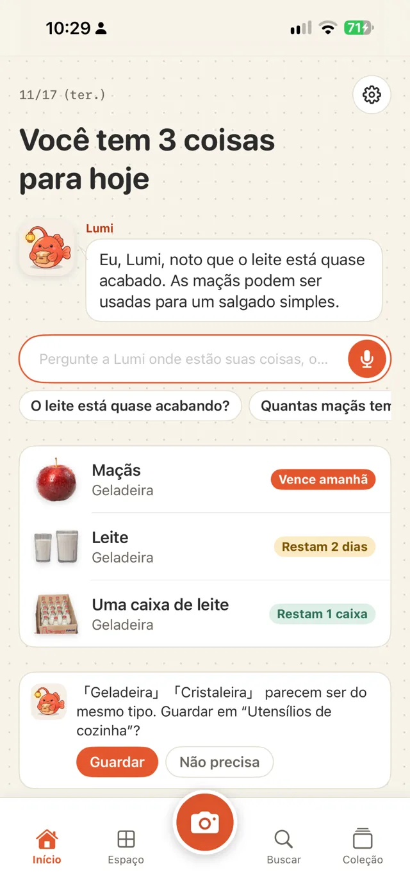
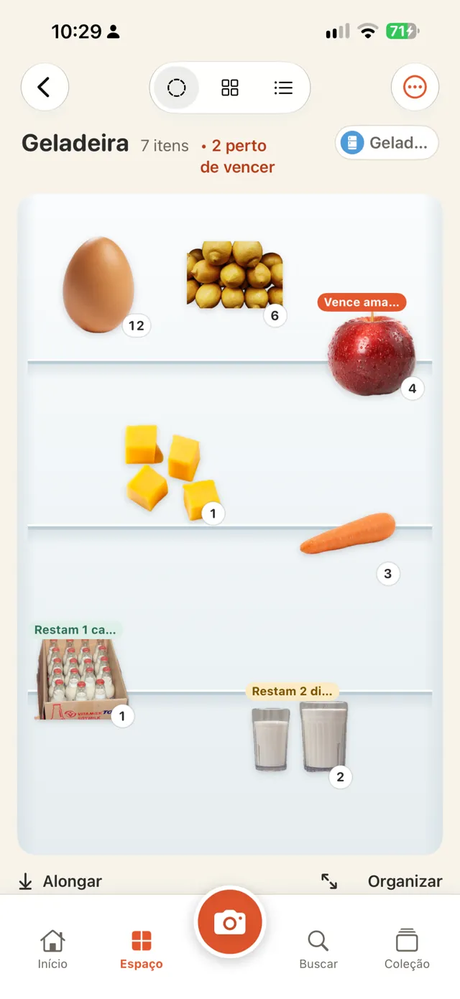
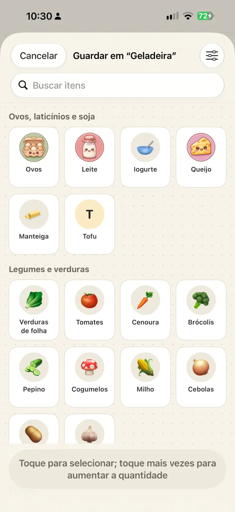
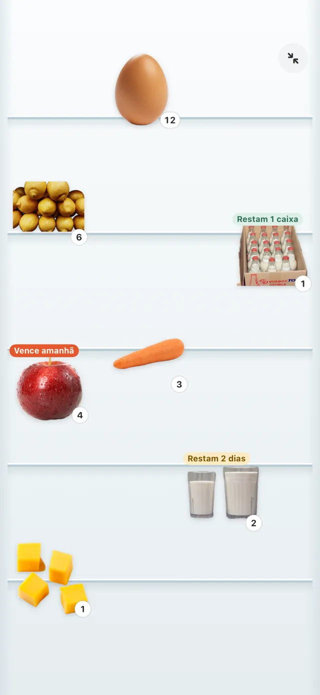
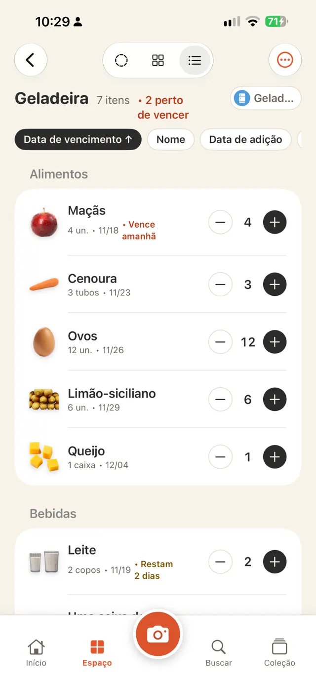
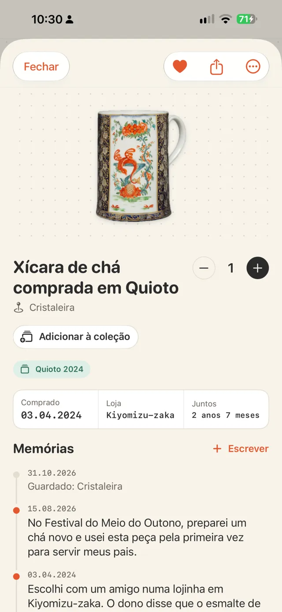
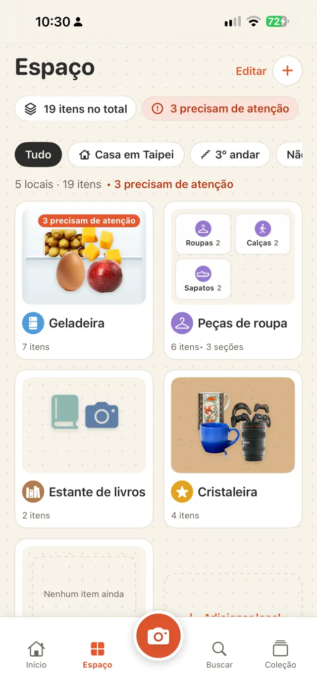
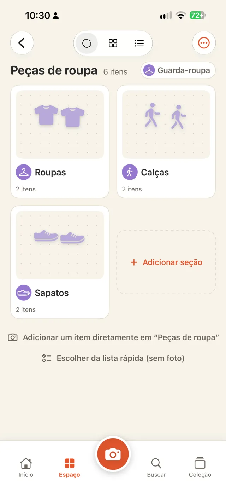
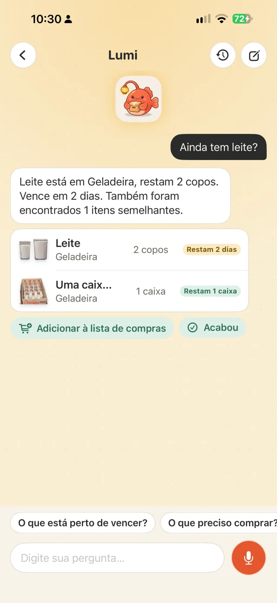
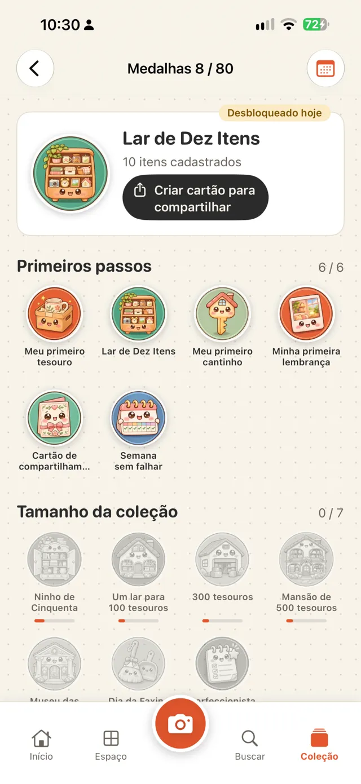

Inventário doméstico e lembranças para iPhone
Fotografe e guarde o registro.
Pesquise quando precisar encontrar.
O leite na geladeira, o papel-toalha no armário, os livros na estante, a caneca que você trouxe de uma viagem. Tire uma foto para registrar onde cada coisa está, quantas unidades restam e quando vence. Essas informações ficam no seu iPhone.
Baixar na App Store- ✓ Download grátis, com 3 espaços gratuitos
- ✓ Sem conta
- ✓ Dados armazenados no seu iPhone

Adicionar
Fotografe, remova o fundo e registre
Aponte a câmera para um objeto e toque no obturador. O fundo da foto é removido automaticamente. A mesma câmera lê códigos de barras: alimentos são consultados no Open Food Facts e livros no Open Library. Depois das compras, use a leitura contínua para registrar vários itens de uma vez.

Lista rápida
Adicione itens sem tirar foto
Para itens que você compra com frequência, como ovos, leite e papel-toalha, toque na Lista rápida para adicionar. Toque novamente para aumentar a quantidade. A data de validade é preenchida com base no prazo habitual de conservação. Geladeira, armário, caixa de remédios e guarda-roupa têm listas próprias; você pode editar os itens e usar suas fotos.

Três visualizações
Alterne entre painel, grade e lista
No painel, as fotos aparecem sobre uma porta de geladeira, papel pontilhado ou quadro de cortiça. Você pode arrastá-las e mudar seu tamanho. Use a grade para encontrar itens e a lista para conferir o estoque, ajustar quantidades com os botões de mais e menos ou deslizar para marcar algo como acabado.
Ampliar
Veja só o fundo e as fotos
Se faltar espaço no painel, toque em Alongar para criar outra página e role para vê-la. A opção Ampliar oculta o título e os botões para ocupar a tela inteira. Você ainda pode arrastar e redimensionar as fotos ou tocar nelas para abrir os itens.

Datas de validade
Confira a data lida na embalagem
Ao fotografar um produto, o app lê a data de validade impressa na embalagem para você confirmar. Você escolhe com quantos dias de antecedência quer receber uma notificação.

Lembranças
Registre a história do que você guarda
Uma caneca de viagem, um presente de alguém: adicione fotos, data, lugar e algumas linhas. Você também pode reunir itens em coleções, como “Kyoto 2024”. A seção “Neste dia” traz essas lembranças de volta à tela Início.

Espaços
Use a geladeira, o Closet 800, a estante ou crie outro espaço
Os modelos incluem geladeira, Closet 800 (um depósito onde dá para entrar, com cerca de 80 cm de profundidade), armário, estante, guarda-roupa, prateleira de coleções, caixa de remédios e caixas de mudança. Se preferir, escolha um ícone e dê seu próprio nome ao espaço. Você também pode agrupar espaços por casa ou andar.

Níveis
Crie espaços dentro de outros espaços
Você pode criar Roupas, Calças e Sapatos dentro de Vestuário. O cartão de Vestuário mostra os espaços que contém. Para mover um espaço, use “Mover para…” no menu ou mantenha o cartão pressionado e arraste-o sobre outro. As categorias também têm subcategorias, como Vestuário › Calças, selecionadas automaticamente ao salvar.

Pergunte ao Lumi
Pergunte onde está um item
Na tela Início, pergunte ao mascote Lumi “onde está meu passaporte?” ou “ainda tem leite?”. Você pode digitar ou manter pressionado para falar. Lumi informa onde o item está, quantos restam e quando vence. O reconhecimento de fala é feito no iPhone quando o aparelho oferece essa opção. Mesmo sem IA, a busca funciona por nomes, categorias e espaços.

Use nestas situações
- Confira o que há na geladeira antes de fazer compras
- Use primeiro os alimentos próximos do vencimento
- Encontre as pilhas AA
- Lembre para quem você emprestou um livro
- Registre o conteúdo de cada caixa de mudança
- Organize lembranças de viagem
- Confira se há itens vencidos na caixa de remédios
Veja como funciona em 50 segundos
O vídeo mostra as três visualizações da geladeira, o ajuste de quantidades, os espaços dentro de Vestuário, as lembranças de um item e uma pergunta ao Lumi sobre o que está perto de vencer.
IA (opcional)
O app funciona sem IA. Se quiser ativá-la, você pode escolher uma das duas opções abaixo. Depois de ativada, a IA é usada quando você toca em um botão de IA e uma vez por dia para escrever a nota breve da tela Início.
Recurso integrado da Apple
Apple Intelligence no iPhone: gratuito, funciona sem internet e mantém os dados no aparelho. Requer um iPhone compatível com iOS 26 ou posterior.
Sua própria chave de API
Gemini, Claude, DeepSeek e outros serviços. A chave fica apenas nas Chaves deste iPhone. Os dados vão diretamente para o serviço escolhido, sem passar por nós.
- Dar um nome: identifica o objeto na foto e sugere categoria e unidade
- Analisar este espaço: sugere o que consumir primeiro na geladeira, o que repor no armário e quais itens venceram na caixa de remédios (não oferece orientação médica)
- Buscar com uma frase: acrescenta sinônimos à pesquisa
- Escrever uma lembrança: transforma algumas palavras em um parágrafo sem acrescentar fatos que você não contou
Conquistas e cartões para compartilhar
Passar 30 dias sem deixar nada vencer na geladeira rende a conquista “Guardião da Geladeira”. Você pode salvar conquistas, histórias de itens e a retrospectiva do ano como imagens. Localização e preço ficam de fora por padrão.

Informações
| Dispositivo | iPhone (iOS 18 ou posterior) |
|---|---|
| Idiomas | Inglês, chinês tradicional, chinês simplificado, japonês, coreano e tailandês |
| Preço | Download grátis (com anúncio em banner, 3 espaços e as 2 conversas mais recentes com Lumi); o Pro remove os anúncios e esses dois limites: US$ 1 por semana, US$ 3 por mês ou US$ 5 em compra única |
| Conta | Não é necessária |
| Dados | Armazenados apenas neste iPhone, com exportação em CSV; itens apagados podem ser recuperados por 30 dias |
| Internet | Usada apenas para consultar códigos de barras e acessar o serviço de IA que você escolher |
O que ainda não está disponível
- Ainda não há sincronização pelo iCloud nem compartilhamento familiar
- Produtos ausentes das bases de códigos de barras precisam receber um nome informado por você; ele será usado na próxima leitura do mesmo código
- A remoção do fundo depende da foto; se não funcionar, o app usa a imagem original
Seus dados ficam no seu iPhone
- Sem conta e sem servidor
- A versão gratuita mostra apenas anúncios não personalizados, sem rastreamento
- A câmera e as fotos são acessadas somente quando você usa esses recursos
Comece pela geladeira
Abra o Stashlight, escolha Geladeira e fotografe os três itens que você mais compra.
Baixar na App Store